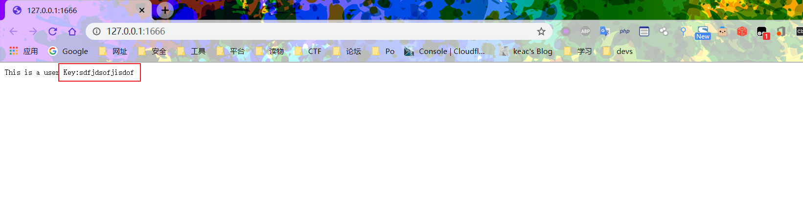

前言
DNS Rebinding (DNS重绑定攻击) 是一个比较早就出现的漏洞，被广泛用于bypass同源策略，绕过ssrf的过滤等等。
DNS Rebinding 原理
讲到 DNS Rebinding，就得先了解下DNS
DNS
DNS是Domain Name Service的缩写,计算机域名服务器,在Internet上域名与IP地址之间是一一对应的，域名虽然便于人们记忆，但机器之间只能互相认识IP地址，它们之间的转换工作称为域名解析，而域名解析需要由专门的域名解析服务器来完成，这就是DNS域名服务器。
更多详细的关于dns原理可以看 阮一峰老师写的DNS 原理入门
这里来讲几个DNS的点
DNS TTL
TTL值全称是“生存时间（Time To Live)”，简单的说它表示DNS记录在DNS服务器上缓存时间，数值越小，修改记录各地生效时间越快。
当各地的DNS(LDNS)服务器接受到解析请求时，就会向域名指定的授权DNS服务器发出解析请求从而获得解析记录；该解析记录会在DNS(LDNS)服务器中保存一段时间，这段时间内如果再接到这个域名的解析请求，DNS服务器将不再向授权DNS服务器发出请求，而是直接返回刚才获得的记录；而这个记录在DNS服务器上保留的时间，就是TTL值。
常见的设置TTL值的场景
增大TTL值，以节约域名解析时间
通常情况下域名解析记录是很少更改的。我们可以通过增大域名记录的TTL值让记录在各地DNS服务器中缓存的时间加长，这样在更长的时间段内，我们访问这个网站时，本地ISP的DNS服务器就不需要向域名的NS服务器发出解析请求，而直接从本地缓存中返回域名解析记录,从而提高解析效率。TTL值是以秒为单位的，通常的默认值都是3600，也就是默认缓存1小时。我们可以根据实际需要把TTL值扩大，例如要缓存一天就设置成86400。
减小TTL值，减少更新域名记录时的不可访问时间
更换空间因为TTL缓存的问题，新的域名记录，在有的地方可能生效了，有的地方可能等上一两天甚至更久才生效。结果就是有的人访问到了新服务器，有的人访问到了旧服务器。如果原来的域名TTL值设置的小，各地的ISP域名缓存服务器服务器就会很快的访问你域名的权威DNS解析服务器，尽快把你域名的DNS解析IP返回给查询者。
浏览器同源策略
为了更好地理解DNS重绑定的工作方式，首先要了解它所避开的安全机制： Web浏览器的同源策略。
按照百度百科的说法就是：同源策略（Same origin policy）是一种约定，它是浏览器最核心也最基本的安全功能，如果缺少了同源策略，则浏览器的正常功能可能都会受到影响。可以说Web是构建在同源策略基础之上的，浏览器只是针对同源策略的一种实现。
其实换句话来说就是在浏览器中，同一个域名下的网站只能调用本域名下的资源。就好比说现在有一个网址 http://www.test.com/index/ 的页面，在同源策略的约束下可以调用 http://www.test.com/index2/ 的资源，但是不能调用 http://www.sdfdsf.com/index/ 的资源，仅有两个例外，<script>,<link>,<iframe>,<img>等标签的SRC属性，发送到任何域的POST请求。
同源策略最直接的表现就是能够区分出各个网站的cookie信息，使得我们能够有条不紊的访问各个网站而不会照成信息混乱。
DNS Rebinding
让我们考虑一下，如果我们设法消除对第三方域数据的限制，有什么可以实现的攻击方法。
首先，这不仅使我们有可能向第三方资源发送请求（如在传统的CSRF攻击中一样），而且还可以处理来自服务器的响应。 结果，大多数旨在确保免受CSRF攻击保护的机制都将失败。 此外，我们可以访问用户本地网络中的资源，即通过使用用户浏览器作为代理无法从外部访问的资源。 此外，我们可以从需要用户证书进行授权的资源中接收机密信息。
当然，我们都知道在网络攻击形式中，是可以通过恶意网页调用受害者本地资源来进行的。然而在上述所讲的同源策略约束下，从理论上来说浏览器打开的网页是无法访问运行本地的恶意脚本的，这能够保证我们上网过程中，本地资源得到安全保护。
但是在实际中，同源策略的约束可以被轻松绕过，比如说域名重新绑定攻击就可以轻松的绕过SOP（浏览器同源策略）。
在网页浏览过程中，用户在地址栏中输入包含域名的网址。浏览器通过DNS服务器将域名解析为IP地址，然后向对应的IP地址请求资源，最后展现给用户。
域名 => 公共DNS服务器=> IP
而对于域名所有者，他可以设置域名所对应的IP地址。
当用户第一次访问，解析域名获取一个IP地址
127.0.0.1.ssrf.loongten.com => 123.123.123.123
一般来说我们的操作系统默认能够将DNS返回来的这个IP地址信息保存60秒，而超过60秒后如果需要再次访问这个域名，就会重新去请求一次dns
域名持有者修改对应的IP地址,用户再次请求该域名，获取一个新的IP地址,如127.0.0.1。
127.0.0.1.ssrf.loongten.com => 127.0.0.1
现在再去调用 127.0.0.1.ssrf.loongten.com 已经变成了本地的资源，对于浏览器来说，整个过程访问的都是同一域名，所以这样其实还是符合浏览器的同源策略，却非法的调用到了PC的本地资源。这样的行为被称之为域名重新绑定攻击（DNS ReBinding）。
攻击流程
- 攻击者引诱受害者打开域名，比如钓鱼、存储型XSS
- 从DNS服务器接收与域名对应的IP地址
- 受害者打开当前域名对应的web服务，接受JavaScript脚本。
- 一段时间后，JavaScript脚本向服务器发起重复请求。
- 此时，攻击者使用防火墙阻止所有受害者对服务器的请求。
- 浏览器再次尝试通过发送相应的DNS请求来获取服务器的IP地址。 这次，它从受害者的本地网络接收易受攻击的服务器的IP地址。
- 利用WebRTC
- 使用批量地址结合域名转换实现内网扫描
DNS重新绑定允许远程攻击者绕过受害者的网络防火墙，并使用其Web浏览器作为代理，直接与其私有网络上的设备进行通信。
DNS rebinding被广泛用于bypass同源策略，绕过ssrf的过滤等等。
技术实现
在上述内容中，了解了什么是域名重新绑定攻击，重点在于DNS服务能够在两次DNS查询中返回不用的IP地址，第一次是真正的IP，第二次是攻击目标IP地址。那么如何实现公共DNS服务器下能够返回自定义信息呢？
- 实现方法一：特定域名实现
- 实现方法二：简单粗暴的两条A记录
- 实现方法三：自建DNS服务器
Ceye
ceye上已经有了DNS Rebinding功能，直接可以用
ceye说会 “the dns answer section will randomly return one of them，有点不靠谱
不是稳定的两个IP交替，这种情况下就是撞运气了。如果能达到第一次访问的是144.x.x.x这个外网地址，第二次访问的是 127.0.0.1，成功的希望就大了一些。
不是很建议使用ceye的这个DNS Rebinding，尝试中单位时间内好多次都访问了同一个IP。感觉这个切换率还不如同域名绑定两个 ANAME 呢。
自建
准备域名
首先你得有一个域名，从某云买或者 www.freenom.com 搞一个免费的 tk 域名
搭建dns服务器
此时，当访问ssrf.loongten.com域名，先解析该域名的DNS域名为 nst.loongten.com，nst.loongten.com指向139这台服务器。
1 | from twisted.internet import reactor, defer |
注1：此脚本可以做到第一次请求解析记录时返回第一个外网 IP，第二次请求解析记录的时候返回一个第二个内网 IP。
注2：里面ttl设为了0。
在终端中运行：
1 | pip install twisted |
不过在ubuntu中，可能会遇到53端口被占用情况，可以尝试
service systemd-resolved stop
注：有时候也会两次解析到第一个外网IP，后面都解析到第二个内网或主机IP。多尝试几次就好。
绕过SSRF IP限制
修复方案
一般SSRF漏洞的解决方案如下
解析目标URL，获取其Host
解析Host，获取Host指向的IP地址
判断是否是内网IP，是内网IP直接return，不再往下执行
请求URL
如果有跳转，拿出跳转URL，执行1
正常的业务逻辑里，当判断完成最后会去请求URL，实现业务逻辑。
这种处理流程真的能避免 SSRF 吗？
可以避免的有：
直接访问内网 IP
302 跳转
xip.io/xip.name 及短链接变换等 URL 变形
畸形 URL
iframe 攻击
IP 进制转换
绕过原理
看起来似乎很完美，但是还有一种攻击可以绕过此种处理流程，就是 DNS Rebinding Attack。
在上面的SSRF漏洞解决方案中，会发起DNS请求的步骤为，第2、4、6步，看来至少要请求3次。因为第6步至少会执行1次DNS请求。
首先，修复逻辑中第2步发起DNS请求，DNS服务器返回一个外网IP，通过验证，执行到第四步。
接着，修复逻辑中第4步会发起DNS请求，DNS服务器返回一个内网IP。此时，SSRF已经产生。
观察到，在这个流程中，一共进行了两次DNS解析：第一次是对URL的host进行DNS解析，第二次是使用CURL发包的时候进行解析。这两次DNS解析是有时间差的，我们可以使用这个时间差进行绕过。
事件差对应的DNS中的机制是TTL。TTL表示DNS里面域名和IP绑定关系的Cache在DNS上存活的最长时间。即请求了域名与iP的关系后，请求方会缓存这个关系，缓存保持的时间就是TTL。而缓存失效后就会删除，这时候如果重新访问域名指定的IP的话会重新建立匹配关系及cache。
在上面的流程中，如果在DNS第二次解析的时候，我们能够更换URL对应的IP，那么在TTL之后、缓存失效之后，重新访问此URL的话，就能获取被更换后的IP。如果我们把第一次解析的IP设为合法IP，就能绕过host合法性检查了；把第二次解析的IP设为内网IP，就达到了SSRF访问内网的目的。
TTL
TTL 最理想的设置是0，即在第一次解析之后，立马换位我们想要访问的内网IP。
但是现实是：现在国内购买的域名大都无法直接将TTL设置为0，例如阿里云的域名，最小的TTL是10分钟。而某些国外的域名解析商可以设置TTL=0。
在实战中我们还可能遇到 DNS 缓存的问题。即使我们在前面实现的时候设置了TTL为0，但是有些公共DNS服务器，比如114.114.114.114还是会把记录进行缓存，完全不按照标准协议来，遇到这种情况是无解的。但是8.8.8.8是严格按照DNS协议去管理缓存的，如果设置TTL为0，则不会进行缓存。
这种情况只能看命了。
另一个利用是否成功的因素取决于目标网站的业务逻辑中的 TTL：
Java默认不存在被DNS Rebinding绕过风险（TTL默认为10）
PHP默认会被DNS Rebinding绕过
Linux默认不会进行DNS缓存
漏洞测试
这里用PHP环境来实现漏洞
参考下大佬写的php ssrf检查，我们改一改，可以更直观的显示出当前状态。
首先，我们写个node脚本，监听127.0.0.1 来模拟真实环境的内部机器
1 |
|
在本地我们有个重要业务，存放在user key

php 环境代码
1 | <?php |
我们直接打开 http://127.0.0.1/ctf/ssrf_check.php?url=https://www.baidu.com
可以正常打开，这时候我们尝试去获取本地key
http://127.0.0.1/ctf/ssrf_check.php?url=http://127.0.0.1:1666/
已经被识别出来是内网ip被拦截掉了，一般来说没什么问题，这时我们尝试下上面搭好的环境。
http://127.0.0.1/ctf/ssrf_check.php?url=http://sdf.ssrf.loongten.com:1666/
绕过同源策略限制攻击
这种情况利用方式很多，比如可以CSRF/XSS 窃取用户数据
绕过代理IP限制
跟前面讲到的绕过ssrf差不多
批量扫内网
这种方式可以在SSRF或者XSS上利用，使用[Tr3jer的dnsAutoRebinding]搭建dns服务器环境
1 | python lib/common.py 192.168.1.1 |
批量生成内网地址进行请求
攻击框架
https://github.com/nccgroup/singularity
https://github.com/FSecureLABS/dref
https://github.com/Tr3jer/dnsAutoRebinding
解决方案
DNS重新绑定之所以如此有趣，是因为它利用了Internet基本结构中的两个主要功能，而且能在很短的时间内更新：
- 浏览器在默认情况下，会运行JavaScript（包括BeEF hooks 之类的东西）
- 可以在DNS 设置较低的TTL，以便可以不断更换映射的IP
由于攻击利用了互联网的这些基本组成部分，因此防御是很特殊的。通常的做法有
- 限制JavaScript的运行（让攻击者没办法再次请求，noscript可以实现）
- 将域名与ip固定（这样它们就不能重复更改）
- 不接受小于特定大小的TTL（因此它们无法更改）
- 不接受DNS是私有地址的请求（对于外部请求来说）（这样它们就不会扩展到内网）
- 在本地运行的端口服务校验来源域名
参考资料
Protecting Browsers from DNS Rebinding Attacks , Stanford University,Collin Jackson, Adam Barth, Andrew Bortz, Weidong Shao, and Dan Boneh
In Proceedings of ACM CCS 07,December 3, 2007
DNS Rebinding Attacks Explained,DANIEL MIESSLER, JULY 27, 2018
Practical Attacks with DNS Rebinding,CRAIG YOUNG,APR 3, 2018
Use DNS Rebinding to Bypass SSRF in Java，美丽联合集团安全应急响应中心，JoyChou@美联安全，2017年9月11日
Use DNS Rebinding to Bypass IP Restrictionn , ricterz ,2017年01月19日